|
|
| sea slugs text index | photo index |
| Phylum Mollusca > Class Gastropoda > sea slugs > Order Sacoglossa > Elysia species |
| Ornate
leaf slug Elysia ornata Family Plakobranchidae updated Oct 2019 Where seen? Often mistaken for leafy seaweed, this slug is seen on all our shores. However, it appears to be seasonal. Sometimes seen in large numbers, at other times, none is to be seen. Features: 4-6cm. Body long with a pair of very large 'wings' (called parapodia). The overall body colour of the slug may be shades of green, yellow or even white. It is believed that the colour depends on how much and what seaweed is in the animal's digestive system. But all have a black margin on the edge of the parapodia, with an orange or yellow margin next to the black. There is a pair of long thick tentacles with tips in the same colour banding as the body edge. The body may have black spots. It may also have white spots, which are glands that secrete a white substance that may repel predators. The parapodia are often held in ruffles so that the animal resembles seaweed. What does it eat? This slug is believed to eat the Hairy green seaweed (Bryopsis sp.) Indeed, leaf slugs are commonly seen there is a bloom of this green feathery seaweed on the shores. See details in the Family Elysiidae for more about how the slug eats and uses the seaweed's chloroplasts. |
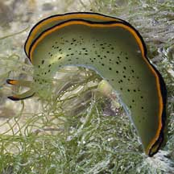 St. John's Island, Jun 07 |
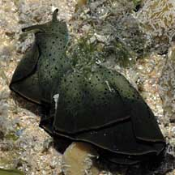 Pulau Sekudu, Apr 06 |
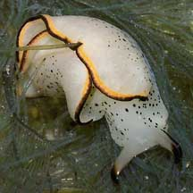 Sentosa, Jan 05 |
| Baby Sacoglossa: These slugs are simultaneous hermaphrodites, that is, each animal has both male and female reproductive organs at the same time. They practice internal fertilisation. When two slugs mate, they may both act as males, extending the penis (usually a white tube that emerges from the side of the neck). Some may insert the penis into the female genital pore, others may simply pierce the partner anywhere in the body. They lay eggs in ribbons. |
|
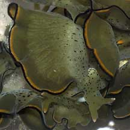 Mating slugs St. John's Island, May 05 |
 The white bits are the reproductive organs. |
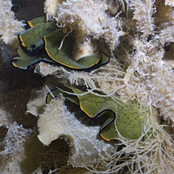 Also seen among Sargassum seaweeds. St John's Island, Oct 11 |
|
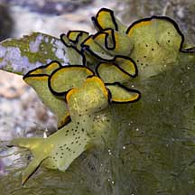 Sentosa, Apr 04 |
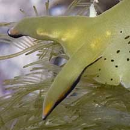 Just mated? |
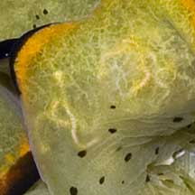 |
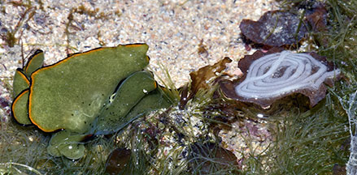 Recently laid egg strings? Pulau Jong, Jan 23 Photo shared by Lok Kok Sheng on facebook. |
| Ornate leaf slugs on Singapore shores |
On wildsingapore
flickr
|
| Other sightings on Singapore shores |
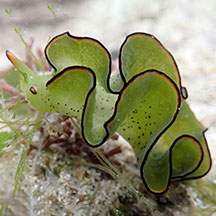 Terumbu Selegie, May 24 Photo shared by Loh Kok Sheng on facebook. |
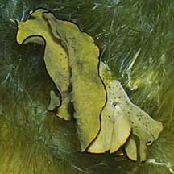 Pulau Biola, Dec 09 |
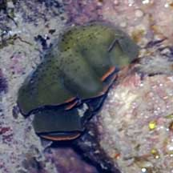 Pulau Biola, May 10 |
| Elysia ornata @ Tanah Merah 06Dec2009 from SgBeachBum on Vimeo. |
Links
|